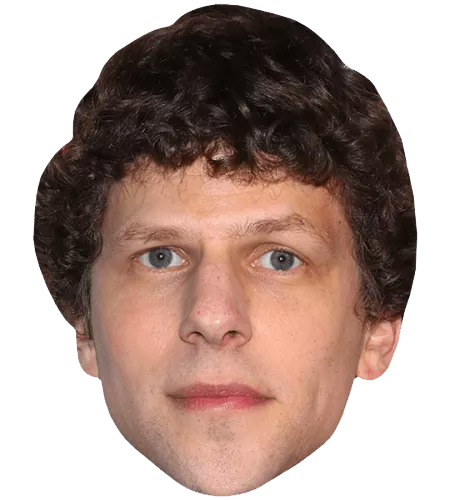

<body>
  
  
  
  
  
  
  
  
  
  
</body>
<style>
  body {
    height: 200vh;
    background: url(https://media1.tenor.com/images/669f9e9981a7cb4bfe804c72fb79dbdc/tenor.gif?itemid=7811841);
    background-size: cover;
  }
  img {
    position: absolute;
    width: 20vw;
    transform-origin: center;
    display: block;
  }
  img:nth-child(5n + 1) {
    left: 0vw;
  }
  img:nth-child(5n + 2) {
    left: 20vw;
  }
  img:nth-child(5n + 3) {
    left: 40vw;
  }
  img:nth-child(5n + 4) {
    left: 60vw;
  }
  img:nth-child(5n + 5) {
    left: 80vw;
  }
  img:last-of-type {
    left: 20vw !important;
    width: 60vw !important;
  }
</style>

<script>
  (async () => {
    await CSS.animationWorklet.addModule("wk.js");
    const scrollSource = document.scrollingElement;
    const timeRange = 10000;
    const scrollTimeline = new ScrollTimeline({ scrollSource, timeRange });

    const randomTransform = () => {
      return [
        {
          transform: `translateY(${200 - 300 * Math.random()}vh) scale(${0.8 +
            0.8 * Math.random()}) rotate(0) `
        },
        {
          transform: `translateY(${100 - 400 * Math.random()}vh) scale(${0.9 +
            0.8 * Math.random()}) rotate(900deg) `
        }
      ];
    };
    const jesses = [...document.querySelectorAll("img")];
    const bigJesse = jesses.pop();
    for (const jesse of jesses) {
      new WorkletAnimation(
        "parallax",
        new KeyframeEffect(jesse, randomTransform(), { duration: timeRange }),
        scrollTimeline
      ).play();
    }
    new WorkletAnimation(
      "parallax",
      new KeyframeEffect(
        bigJesse,
        [
          {
            transform: `translateY(200vh) scale(.75)`
          },
          {
            transform: `translateY(100vh) scale(1.5)`
          }
        ],
        { duration: timeRange }
      ),
      scrollTimeline
    ).play();
  })().catch(console.error);
</script>
